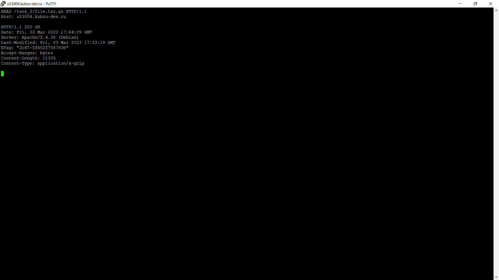
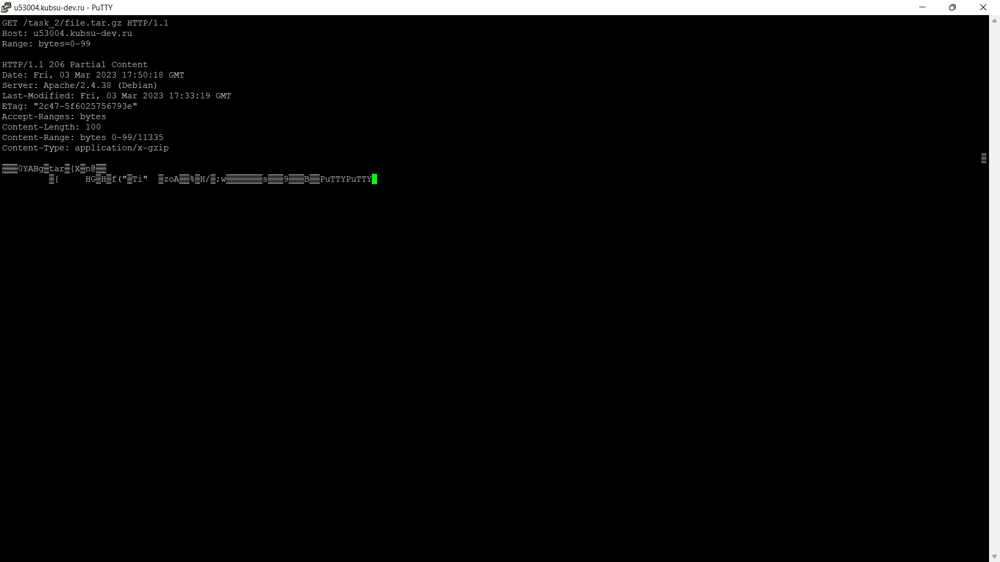

Загружаем файлы на учебный сервер

Проверяем работоспособность index.php

Главная страница методом GET в протоколе HTTP 1.0

Внутренняя страница методом GET в протоколе HTTP 1.1

Определяем размер file.tar.gz (11335 байт) без скачивания

Определяем медиатип ресурса /image.png (image/png)
Отправляем комментарий на адрес /task_2/index.php

Получаем первые 100 байт файла file.tar.gz

Определяем кодировку ресурса index.php (UTF-8)
Фиксируем изменения (загружаем скриншоты и остальное)